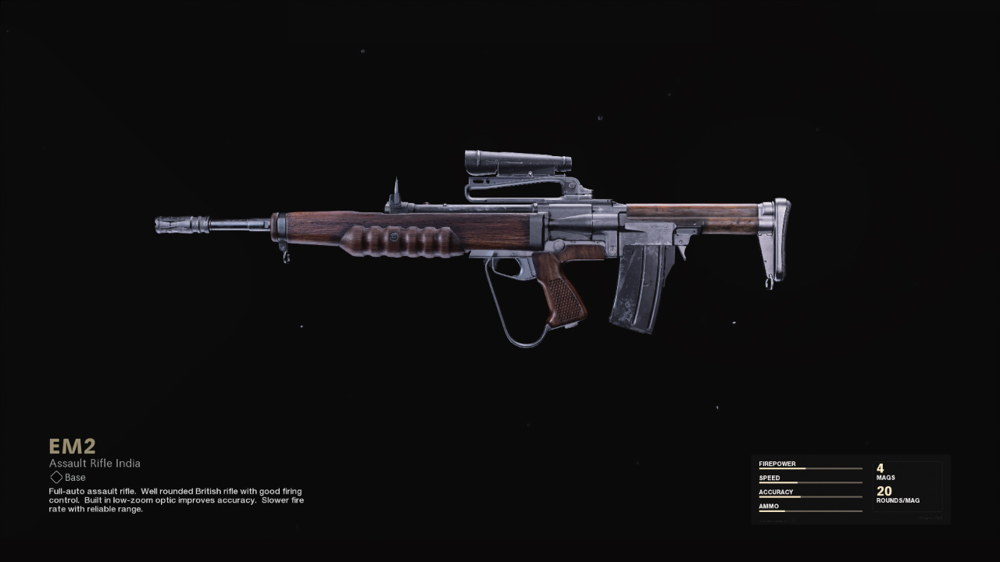
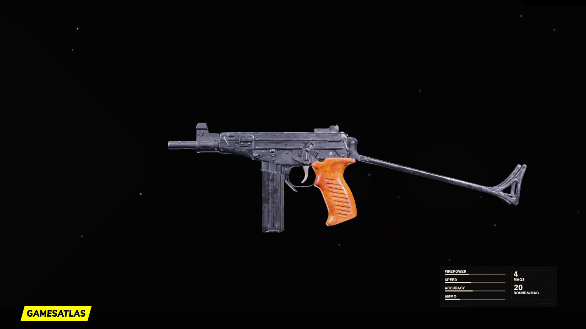

☰
Current Meta
Assault Rifle: EM2
The EM2 was added to Black Ops Cold War and Warzone on August 13, 2021, as part of the free content included in Season Five.
Full-auto assault rifle.

SMG: Ots-9
The OTs 9 is a full-auto submachine gun. Impressive firepower at close range with good visibility while firing. Reliable recoil control with a smaller magazine size.
